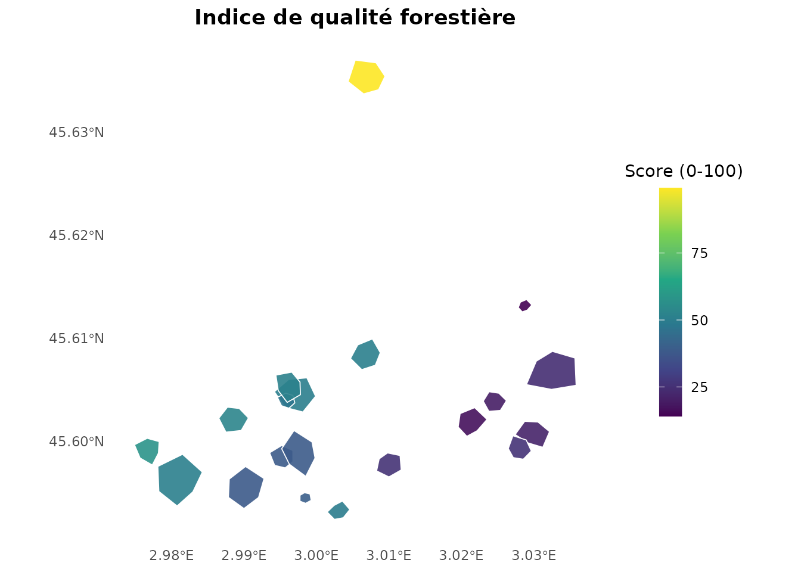

Démarrage rapide avec nemeton
Pascal Obstétar
2026-01-10
Source:vignettes/getting-started_fr.Rmd
getting-started_fr.RmdIntroduction
Le package nemeton implémente la méthode Nemeton pour
l’analyse systémique de territoires forestiers. Il fournit des outils
pour :
- Calculer des indicateurs biophysiques multi-famille (carbone, eau, sols, paysage, etc.)
- Normaliser les valeurs d’indicateurs selon plusieurs méthodes
- Créer des indices composites pour une évaluation holistique
- Visualiser les résultats avec des cartes et graphiques
Cette vignette démontre le workflow complet avec le jeu de données
massif_demo.
Installation
# Depuis GitHub
remotes::install_github("pobsteta/nemeton")Charger les données de démonstration
Le package inclut un jeu de données synthétique
(massif_demo) représentant une zone de 5km × 5km avec 20
parcelles forestières.
# Charger les parcelles forestières
data(massif_demo_units)
# Inspecter les parcelles
print(massif_demo_units)
#> Simple feature collection with 20 features and 5 fields
#> Geometry type: POLYGON
#> Dimension: XY
#> Bounding box: xmin: 698041.8 ymin: 6499215 xmax: 702793.8 ymax: 6504159
#> Projected CRS: RGF93 v1 / Lambert-93
#> First 10 features:
#> parcel_id forest_type age_class management surface_ha
#> 1 P01 Futaie mixte Mature Mixte 4.989211
#> 2 P02 Futaie résineuse Moyen Production 5.867935
#> 3 P03 Futaie feuillue Surannée Conservation 6.557777
#> 4 P04 Futaie feuillue Surannée Production 9.989553
#> 5 P05 Futaie résineuse Moyen Production 5.906395
#> 6 P06 Futaie résineuse Mature Production 1.048296
#> 7 P07 Futaie feuillue Mature Mixte 17.079363
#> 8 P08 Futaie feuillue Mature Production 11.414577
#> 9 P09 Futaie mixte Moyen Production 16.105209
#> 10 P10 Taillis Surannée Production 10.733433
#> geometry
#> 1 POLYGON ((698299.9 6499928,...
#> 2 POLYGON ((701702.2 6500418,...
#> 3 POLYGON ((702240.4 6500270,...
#> 4 POLYGON ((700641.3 6504129,...
#> 5 POLYGON ((699268.2 6500307,...
#> 6 POLYGON ((699943.5 6499421,...
#> 7 POLYGON ((698500.5 6499360,...
#> 8 POLYGON ((699061.9 6499649,...
#> 9 POLYGON ((702258.5 6500666,...
#> 10 POLYGON ((699897.1 6500739,...
# Statistiques sommaires
cat("\nSurface totale:", sum(massif_demo_units$surface_ha), "ha\n")
#>
#> Surface totale: 136.0225 ha
table(massif_demo_units$forest_type)
#>
#> Futaie feuillue Futaie mixte Futaie résineuse Taillis
#> 11 2 4 3
ggplot(massif_demo_units) +
geom_sf(aes(fill = forest_type)) +
theme_minimal() +
labs(
title = "Massif Demo - Types forestiers",
fill = "Type de forêt"
)Parcelles forestières par type
Charger les couches spatiales
Utilisez massif_demo_layers() pour charger tous les
rasters et vecteurs associés :
layers <- massif_demo_layers()
print(layers)
#>
#> ── nemeton_layers object ───────
#>
#> ── Rasters (4) ──
#>
#> • biomass : massif_demo_biomass.tif [not loaded]
#> • dem : massif_demo_dem.tif [not loaded]
#> • landcover : massif_demo_landcover.tif [not loaded]
#> • species_richness : massif_demo_species_richness.tif [not loaded]
#>
#> ── Vectors (2) ──
#>
#> • roads : massif_demo_roads.gpkg [not loaded]
#> • water : massif_demo_water.gpkg [not loaded]Le jeu de données inclut : - Rasters : biomasse, MNT, occupation du sol, richesse spécifique - Vecteurs : réseau routier, cours d’eau
Calculer les indicateurs
Indicateurs individuels
# Carbone (stock de biomasse)
carbon <- nemeton_compute(
massif_demo_units,
layers,
indicators = "carbon"
)
# Eau (régulation hydrique)
water <- nemeton_compute(
massif_demo_units,
layers,
indicators = "water"
)
# Afficher les résultats
head(carbon[, c("parcel_id", "forest_type", "carbon")])
#> Simple feature collection with 6 features and 3 fields
#> Geometry type: POLYGON
#> Dimension: XY
#> Bounding box: xmin: 698041.8 ymin: 6499388 xmax: 702507.7 ymax: 6504159
#> Projected CRS: RGF93 v1 / Lambert-93
#> parcel_id forest_type carbon geometry
#> 1 P01 Futaie mixte 81.00371 POLYGON ((698299.9 6499928,...
#> 2 P02 Futaie résineuse 49.14001 POLYGON ((701702.2 6500418,...
#> 3 P03 Futaie feuillue 58.76237 POLYGON ((702240.4 6500270,...
#> 4 P04 Futaie feuillue 101.49214 POLYGON ((700641.3 6504129,...
#> 5 P05 Futaie résineuse 77.54757 POLYGON ((699268.2 6500307,...
#> 6 P06 Futaie résineuse 68.04375 POLYGON ((699943.5 6499421,...Indicateurs multiples simultanés
# Calculer 5 indicateurs en une fois
results <- nemeton_compute(
massif_demo_units,
layers,
indicators = c(
"carbon", "biodiversity", "water",
"fragmentation", "accessibility"
)
)
# Vue d'ensemble
summary(results[, c("carbon", "biodiversity", "water")])
#> carbon biodiversity water geometry
#> Min. : 48.56 Min. :20.58 Min. :0.0000 POLYGON :20
#> 1st Qu.: 59.51 1st Qu.:24.29 1st Qu.:0.1925 epsg:2154 : 0
#> Median : 70.53 Median :27.03 Median :0.3200 +proj=lcc ...: 0
#> Mean : 69.05 Mean :26.17 Mean :0.3277
#> 3rd Qu.: 76.58 3rd Qu.:27.81 3rd Qu.:0.4685
#> Max. :101.49 Max. :34.39 Max. :0.7323Normalisation
Normalisez les indicateurs pour les rendre comparables (échelle 0-100) :
# Normalisation min-max
normalized <- normalize_indicators(
results,
indicators = c("carbon", "biodiversity", "water"),
method = "minmax"
)
# Comparer avant/après
cat("\nAvant normalisation (carbone):\n")
#>
#> Avant normalisation (carbone):
summary(results$carbon)
#> Min. 1st Qu. Median Mean 3rd Qu. Max.
#> 48.56 59.51 70.53 69.05 76.58 101.49
cat("\nAprès normalisation (carbone):\n")
#>
#> Après normalisation (carbone):
summary(normalized$carbon_norm)
#> Min. 1st Qu. Median Mean 3rd Qu. Max.
#> 0.00 20.68 41.52 38.71 52.93 100.00Méthodes de normalisation
# z-score (distribution normale centrée-réduite)
norm_zscore <- normalize_indicators(
results,
indicators = "carbon",
method = "zscore"
)
# Quantiles (distribution uniforme)
norm_quantile <- normalize_indicators(
results,
indicators = "carbon",
method = "quantile"
)Agrégation en indices composites
Combinez plusieurs indicateurs en un indice unique :
# Indice composite avec poids égaux
composite <- create_composite_index(
normalized,
indicators = c("carbon_norm", "biodiversity_norm", "water_norm"),
name = "ecosystem_health"
)
# Afficher les résultats
head(composite[, c("parcel_id", "forest_type", "ecosystem_health")])
#> Simple feature collection with 6 features and 3 fields
#> Geometry type: POLYGON
#> Dimension: XY
#> Bounding box: xmin: 698041.8 ymin: 6499388 xmax: 702507.7 ymax: 6504159
#> Projected CRS: RGF93 v1 / Lambert-93
#> parcel_id forest_type ecosystem_health geometry
#> 1 P01 Futaie mixte 52.55174 POLYGON ((698299.9 6499928,...
#> 2 P02 Futaie résineuse 27.25092 POLYGON ((701702.2 6500418,...
#> 3 P03 Futaie feuillue 21.79275 POLYGON ((702240.4 6500270,...
#> 4 P04 Futaie feuillue 98.75381 POLYGON ((700641.3 6504129,...
#> 5 P05 Futaie résineuse 54.39274 POLYGON ((699268.2 6500307,...
#> 6 P06 Futaie résineuse 35.04001 POLYGON ((699943.5 6499421,...Agrégation pondérée
# Poids personnalisés (carbone 50%, biodiversité 30%, eau 20%)
composite_weighted <- create_composite_index(
normalized,
indicators = c("carbon_norm", "biodiversity_norm", "water_norm"),
weights = c(0.5, 0.3, 0.2),
name = "conservation_index"
)Méthodes d’agrégation
# Moyenne géométrique (effets multiplicatifs)
composite_geom <- create_composite_index(
normalized,
indicators = c("carbon_norm", "water_norm"),
aggregation = "geometric_mean",
name = "water_carbon_index"
)
# Minimum (approche conservatrice, facteur limitant)
composite_min <- create_composite_index(
normalized,
indicators = c("carbon_norm", "biodiversity_norm"),
aggregation = "min",
name = "minimum_performance"
)Visualisation
Cartes thématiques
plot_indicators_map(
composite,
indicators = "ecosystem_health",
title = "Indice de santé écosystémique",
legend_title = "Score (0-100)"
)Carte de l’indice de santé écosystémique
Cartes multiples (facettes)
plot_indicators_map(
normalized,
indicators = c("carbon_norm", "biodiversity_norm"),
palette = "viridis",
facet = TRUE,
ncol = 2,
title = "Comparaison carbone vs biodiversité"
)Comparaison carbone vs biodiversité
Graphique radar
nemeton_radar(
normalized,
unit_id = "P01",
indicators = c("carbon_norm", "biodiversity_norm", "water_norm"),
title = "Profil multi-indicateurs - Parcelle P01"
)
Profil écosystémique - Parcelle P01
Workflow complet
Voici un exemple de workflow complet de bout en bout :
# 1. Charger les données
data(massif_demo_units)
layers <- massif_demo_layers()
# 2. Calculer les indicateurs
results <- nemeton_compute(
massif_demo_units,
layers,
indicators = c(
"carbon", "biodiversity", "water",
"fragmentation", "accessibility"
)
)
# 3. Normaliser (0-100)
normalized <- normalize_indicators(
results,
indicators = c(
"carbon", "biodiversity", "water",
"fragmentation", "accessibility"
),
method = "minmax"
)
# 4. Créer un indice composite
composite <- create_composite_index(
normalized,
indicators = c("carbon_norm", "biodiversity_norm", "water_norm"),
weights = c(0.4, 0.4, 0.2),
name = "forest_quality"
)
# 5. Visualiser
plot_indicators_map(
composite,
indicators = "forest_quality",
title = "Indice de qualité forestière",
legend_title = "Score (0-100)"
)
Analyses avancées
Inverser un indicateur
Pour les indicateurs où une valeur faible est souhaitable :
# Exemple: inverser un indicateur
# (Utilisé pour les indicateurs où une valeur faible est souhaitable)
normalized_inv <- invert_indicator(
normalized,
indicators = "water_norm",
suffix = "_inv"
)
# L'indicateur inversé
head(normalized_inv[, c("parcel_id", "water_norm", "water_norm_inv")])Filtrage et sous-ensembles
# Sélectionner uniquement les futaies feuillues
broadleaf <- normalized[normalized$forest_type == "Futaie feuillue", ]
# Créer un indice spécifique
broadleaf_index <- create_composite_index(
broadleaf,
indicators = c("carbon_norm", "biodiversity_norm"),
name = "broadleaf_quality"
)Internationalisation
Le package supporte le français et l’anglais :
# Définir la langue
nemeton_set_language("fr") # Français
# nemeton_set_language("en") # English
# Les messages d'erreur/information seront dans la langue choisieExport des résultats
# Export en GeoPackage
sf::st_write(composite, "results/forest_quality.gpkg")
# Export en CSV (sans géométrie)
results_table <- composite |>
sf::st_drop_geometry()
write.csv(results_table, "results/forest_quality.csv", row.names = FALSE)Prochaines étapes
-
Analyse temporelle :
vignette("temporal-analysis_fr")- Analyse multi-périodes -
Familles d’indicateurs :
vignette("indicator-families_fr")- Système 12 familles -
Internationalisation :
vignette("internationalization")- Système i18n
Références
- Méthode Nemeton : Développée par Vivre en Forêt
- Documentation complète :
help(package = "nemeton") - Site web : https://pobsteta.github.io/nemeton/
Session Info
sessionInfo()
#> R version 4.5.2 (2025-10-31)
#> Platform: x86_64-pc-linux-gnu
#> Running under: Ubuntu 24.04.3 LTS
#>
#> Matrix products: default
#> BLAS: /usr/lib/x86_64-linux-gnu/openblas-pthread/libblas.so.3
#> LAPACK: /usr/lib/x86_64-linux-gnu/openblas-pthread/libopenblasp-r0.3.26.so; LAPACK version 3.12.0
#>
#> locale:
#> [1] LC_CTYPE=C.UTF-8 LC_NUMERIC=C LC_TIME=C.UTF-8
#> [4] LC_COLLATE=C.UTF-8 LC_MONETARY=C.UTF-8 LC_MESSAGES=C.UTF-8
#> [7] LC_PAPER=C.UTF-8 LC_NAME=C LC_ADDRESS=C
#> [10] LC_TELEPHONE=C LC_MEASUREMENT=C.UTF-8 LC_IDENTIFICATION=C
#>
#> time zone: UTC
#> tzcode source: system (glibc)
#>
#> attached base packages:
#> [1] stats graphics grDevices utils datasets methods base
#>
#> other attached packages:
#> [1] ggplot2_4.0.1 nemeton_0.4.23
#>
#> loaded via a namespace (and not attached):
#> [1] tidyr_1.3.2 sass_0.4.10 generics_0.1.4
#> [4] class_7.3-23 KernSmooth_2.23-26 lattice_0.22-7
#> [7] digest_0.6.39 magrittr_2.0.4 evaluate_1.0.5
#> [10] grid_4.5.2 RColorBrewer_1.1-3 fastmap_1.2.0
#> [13] jsonlite_2.0.0 e1071_1.7-17 DBI_1.2.3
#> [16] purrr_1.2.0 viridisLite_0.4.2 scales_1.4.0
#> [19] codetools_0.2-20 textshaping_1.0.4 jquerylib_0.1.4
#> [22] cli_3.6.5 rlang_1.1.6 units_1.0-0
#> [25] withr_3.0.2 cachem_1.1.0 yaml_2.3.12
#> [28] otel_0.2.0 tools_4.5.2 raster_3.6-32
#> [31] dplyr_1.1.4 exactextractr_0.10.1 vctrs_0.6.5
#> [34] R6_2.6.1 proxy_0.4-29 lifecycle_1.0.5
#> [37] classInt_0.4-11 fs_1.6.6 htmlwidgets_1.6.4
#> [40] ragg_1.5.0 pkgconfig_2.0.3 desc_1.4.3
#> [43] pkgdown_2.2.0 terra_1.8-86 bslib_0.9.0
#> [46] pillar_1.11.1 gtable_0.3.6 glue_1.8.0
#> [49] Rcpp_1.1.0 sf_1.0-23 systemfonts_1.3.1
#> [52] xfun_0.55 tibble_3.3.0 tidyselect_1.2.1
#> [55] knitr_1.51 farver_2.1.2 htmltools_0.5.9
#> [58] labeling_0.4.3 rmarkdown_2.30 compiler_4.5.2
#> [61] S7_0.2.1 sp_2.2-0